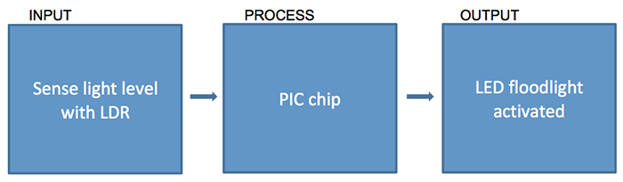
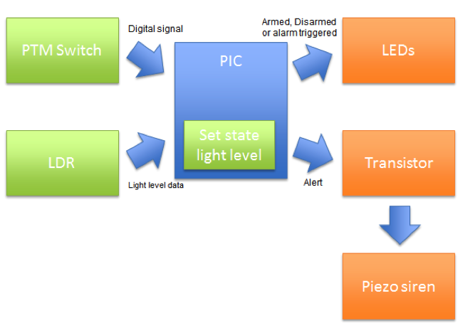
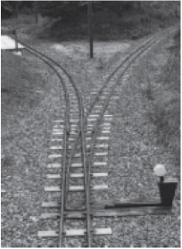
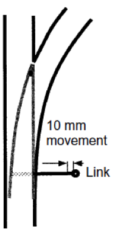
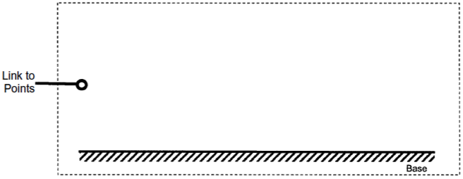
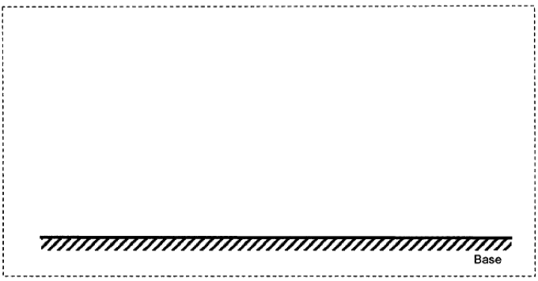
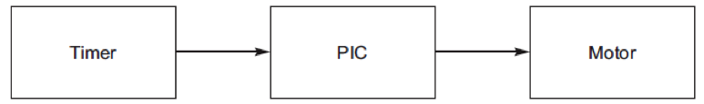

System Block Diagrams
Table of Contents
1 Introduction
- When producing the design for your coursework project (or considering a solution to an exam question), you may find it useful to produce a system block diagram to articulate the interaction between the different component parts of your product.
Basic Diagrams
- a simple example would be to consider a PIC powered LED floodlight, which comes on automatically when it gets dark. We could express this idea as follows:

- Each box contains a component part of the system that will eventually be created, and the flow-lines represent the flow of information between the components. This way, a non-expert could understand the way in which the parts interact with one another.
Advanced System Block Diagrams
A more complex idea might be as shown below: 
- This example represents the drawer alarm project, which you made in year 9. Here, the PTM swich and LDR feed signals into the PIC, and the PIC in turn activates the LED. The PIC also activates the transistor, which in turn drives the siren (as a PIC can’t carry enough current to power a siren by itself).
You try
Draw System block diagrams to demonstrate: -
- A lift being called from the floor above by a button
- A servo-operated robotic arm being moved by someone turning a potentiometer.
- A house alarm, with an alarm bell driven by motion and pressure sensor
2 Recap
Past Paper Questions
- June 2007, Q4. This question is about a system for remotely changing the points on an outdoor model railway. The photograph below shows a railway junction in a park. The points are used to change the route of the trains.

- The sketch below shows a plan of the points. They are currently changed manually by moving this lever.
 (a) Draw a system block diagram to operate the point from 10 metres away. (b) Explain how your system would operate the points from 10 metres away. (2 marks)
(c) In the box below draw your system OUTPUT from part (a) that will operate the points by moving the link 10 mm. Attach your system to the link shown in the box below. Marks will be awarded as follows:
- a suitable system able to operate the points (3 marks)
- a suitable method of mounting your device to the base (1 mark)
- a suitable power source. (1 mark)
 (d) Draw your system INPUT from part (a) in the box below. Marks will be awarded as follows: -
- a suitable INPUT device able to operate the points (3 marks)
- a suitable mounting of the device to the base. (1 mark)
 (e) Using notes and sketches explain how a sensor could be used to sense the train at a certain location on the track. Marks will be awarded as follows:
- a suitable sensor able to sense the train (3 marks)
- a suitable method of mounting the sensor to the track. (2 marks)
- June 2010, Q3b. In the system diagram below, write the names of components that could make a system that indicates a change in temperature.
- June 2010, Q6. You are advised to spend about 15 minutes on this question. This question is about the analysis and evaluation of an existing product. The product is an automatic curtain closing and opening system.

- 6 (a) The proposed solution is shown below as a block diagram.
- This solution does not control the curtains correctly. Identify two possible problems with this proposal and state how each problem could be solved.
- Problem 1:
- Solution 1:
- Problem 2:
- Solution 2: (6 marks)
- June 2011, Q1e. (i) The light should come ON when either door is opened, stay on for 10 seconds and then turn OFF. Design a system block diagram to show this. (5 marks)
- (ii) Describe three extra user features that could be added to this simple system. (3 marks)